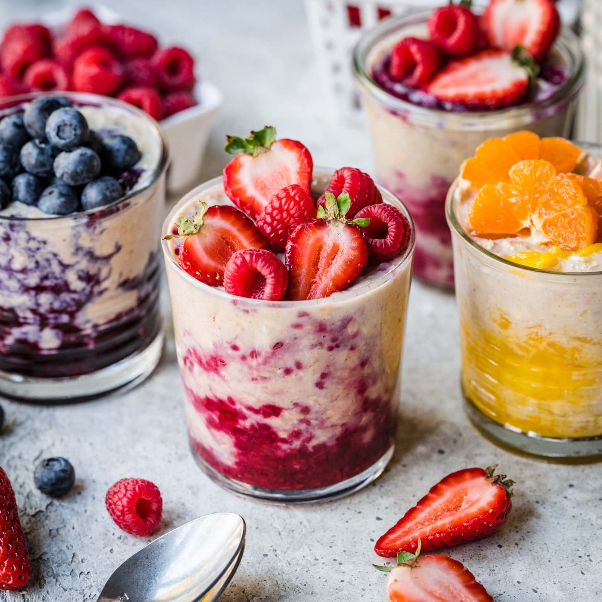

Overnight Oats

This is the perfect breakfast for if you are time crunched in the morning
Ingredients:
- 1/3 cup milk
- 1/5 cup Greek yogurt
- 1/4 cup rolled oats
- 2 teaspoons honey
- 2 teaspoons chia seeds
- 1 teaspoon ground cinnamon
- 1/4 cup fresh blueberries
- Combine milk, yogurt, oats, honey, chia seeds, and cinnamon in a 1/2-pint jar with a lid; cover and shake until combined. Fold in blueberries.
- Cover and refrigerate, 8 hours to overnight.